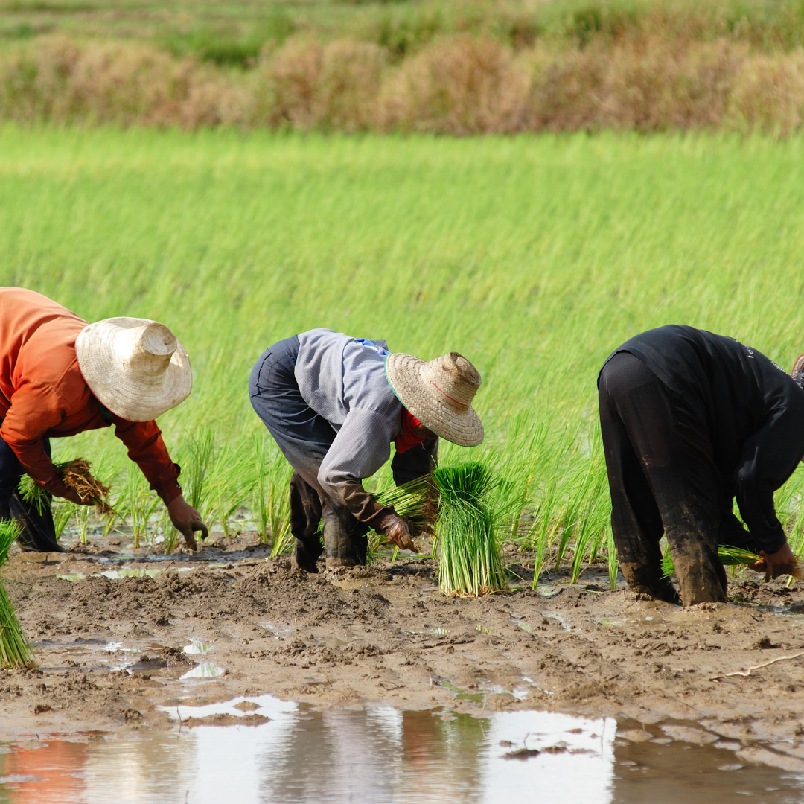
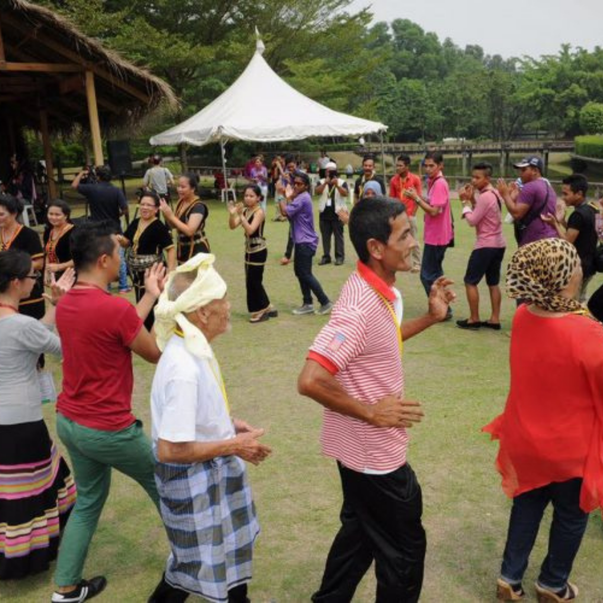

History Overview
Kampung Wai, nestled in Perlis, is a place where history comes alive. From its early days as a settlement favored for its fertile lands and abundant resources to its vibrant present-day community, Kampung Wai has preserved its cultural heritage while embracing modernity. The villagers has deep connection to the land and their traditions creates a unique atmosphere that welcomes visitors to experience the essence of rural Malaysia.
The architectural heritage of Kampung Wai is a testament to the ingenuity and craftsmanship of its people. Traditional wooden houses, raised on stilts to protect against floods, are adorned with intricate carvings that tell stories of cultural heritage and ancestral wisdom. These homes are more than just shelters. They acts as sanctuaries that reflect the villager's respect for nature and their desire to live in harmony with their surroundings.
As the village evolved, so did its cultural practices. The rhythms of daily life in Kampung Wai are closely tied to the cycles of nature. Festivals and ceremonies celebrate the changing seasons, the planting and harvesting of crops, and flow of the tides. These events are vibrant expressions of gratitude for the Earth’s treasures and a way to honor the natural world that sustains the community.
Source: Youtube SKYRUN MALAYSIA
World of Heritage: Kampung Wai, Perlis
Paddy Cultivation

Kampung Wai has a rich history of rice cultivation, contributing to the region's agricultural economy.
Cultural Dance and Music

Traditional dances like Joget Lambak and musical performances are integral to village festivals.
Traditional Wooden Houses

Kampung Wai is known for its well-preserved Malay traditional wooden houses with intricate carvings and designs.